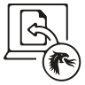
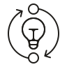

Map the fragmentation
First, I met with the integrating teams to understand how their products created, named and related samples today.
OUTPUTShared problem definition
01 · SIMS (Sample Information Management System) · 0→1 enterprise data platform
How I turned a fragmented sample experience into a shared product model designed to preserve identity and traceability across Illumina software.
“You’re solving one of the hardest and longest-standing problems at Illumina.”
A colleague said this to me at a conference while we were discussing the sample-management problem.
01 · The problem
02 · My role & impact
I worked across the product lifecycle, from understanding the problem through bringing the solution to customers.
“The data model fits very nicely to standard sequencing workflows. It's well thought out.”
“I really like it. I like the levels of sample/specimen/run sample definition.”
“We're very excited about SIMS because it gives a really interesting end-to-end view of a sample.”
03 · From problem → solution
We used an API-first approach. Getting the backend model and contracts right was foundational because those APIs would power the frontend experience and every product integration around it.
First, I met with the integrating teams to understand how their products created, named and related samples today.
Next, I balanced building something new with fitting into existing frameworks, defining a shared model that could preserve sample identity without forcing every integrating product to reinvent its workflows.
Then, I translated the model into API behavior and integration requirements so each product had a clear contract for creating, updating and consuming sample data.
Finally, I validated workflows with customers, coordinated dependencies and prepared for launch through alpha and beta testing periods.

DRAGENPipelines and reports
EmedgeneClinical insightsTHE SOLUTION
SIMS serves as the single source of truth for sample data, connecting products across the sequencing workflow. Integrations use an event-driven architecture to keep information in sync, so every team is working with the same, up-to-date sample data.
04 · Key product decisions
Existing products already had established sample concepts. I helped define a compatibility model that supported the target architecture without requiring an ecosystem-wide rewrite.
Code freezes, security readiness and downstream release mechanics could move the milestone. I made those dependencies explicit in the roadmap and prioritized internal beta before external exposure.
Migration crossed systems without one natural owner. I brought a concrete proposal and working agenda to the teams so engineers could challenge it and converge on a path together.
05 · Skills & takeaways
Data models and API semantics are product decisions when they shape what users and systems can do.
Adoption depends on clear contracts, credible migration paths and repeated alignment.
The real roadmap includes other teams' releases, security work and dependencies.
Translate architecture into customer impact, strategic value, risk and the decision needed.